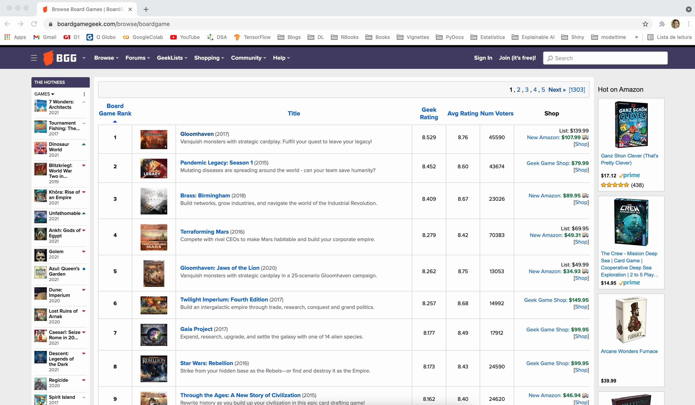
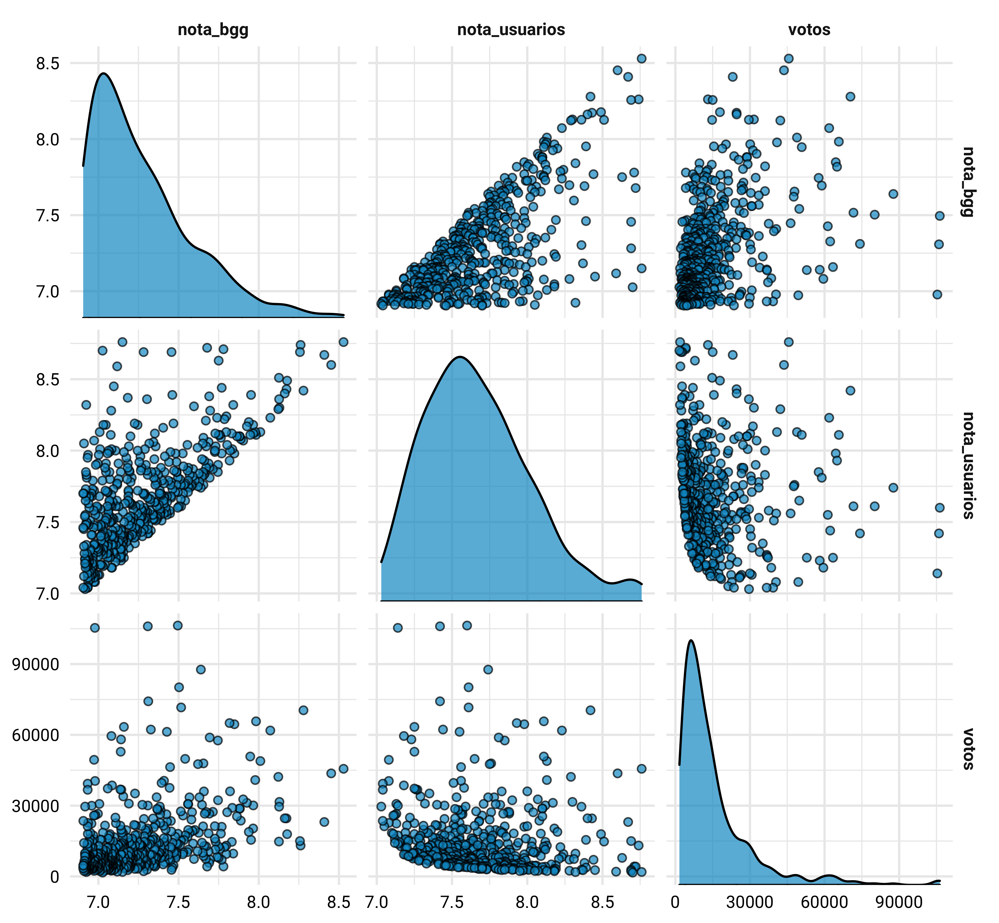

Motivação
Eu sempre joguei os jogos de tabuleiro mais tradicionais, como Banco Imobiliário, Scotland Yard e War. Esses são jogos muito populares, apesar de cada partida ser muito repetitiva e eles demandarem uma quantidade razoável de jogadores para que eles tenham graça - e, no meio de uma pandemia, se já acabava sendo chato jogar um deles, a coisa passou a ser impossível. Mas será que não existem alternativas (mais divertidas, inclusive) para continuar com a distração num momento tão difícil como esse? Como eu bem descobri durante essa pandemia, a resposta estava nos próprios jogos de tabuleiro - mais precisamente, na reinvenção que eles sofreram nas últimas décadas.
Existem inúmeros jogos de tabuleiro disponíveis atualmente e um número crescente de pessoas que os curtem. Dada esta diversidade de novos títulos, inúmeros portais têm focado em criar e manter a cultura dos jogos de tabuleiro, trazendo reportagens, fóruns, marketplaces, reviews, rankings e fichas técnicas de cada um deles. Dois exemplos destes sites são o BoardGameGeek e a Ludopedia: ambos possuem praticamente o mesmo conteúdo, mas o primeiro é um portal americano e o segundo é brasileiro. Outro ponto interessante é que o consumo de informações desses portais não precisa ocorrer pelo browser, uma vez que ambos fornecem uma API para a obtenção de dados através de requests simples. A Ludopedia oferece uma API REST bastante intuitivaˆ[Essa API ainda está em desenvolvimento, e devo escrever sobre o consumo de informações através dela em outro post], enquanto a o BoardGameGeek usa uma API XML que eu acabei achando meio complicada de usar. Mas o que isto tudo tem haver com dados?
Bom, logo que descobri esse hobby, acabei ficando muito perdido sobre quais são os títulos mais legais para se jogar. São tantas as possibilidades e informações disponíveis sobre cada jogo, que eu me peguei navegando entre inúmeras páginas nesses portais para tentar encontrar aquilo que eu estava buscando. Logo, acabei tendo a ideia de tentar compilar esses dados e colocar tudo dentro de uma linguagem de programação, a fim de deixar a análise de dados me ajudar a encontrar os jogos que mais combinavam com aquilo que eu estava buscando. Para isso, tive a ideia de pegar as informações dos jogos da BoardGameGeek (BGG daqui em diante) através de sua API, tabular tudo o que estava buscando e partir para o abraço. Mas nada é tão simples quanto parece.
A parede que encontrei é bem chatinha: o request da API XML do Bofunciona muito melhor quando usamos o código numérico de identificação do jogo. Quando passamos o nome do jogo para o request, ele precisa estar grafado igual à como está na base do BGG, caso contrário ele pode falhar em trazer o que você está buscando ou trazer todos os títulos que tenham um match parcial com aquele que você buscou (daí para a frente é só caos). Outra ressalva aqui é que essa API não oferece nenhum tipo de método através do qual podemos pegar uma tabelinha com todos os IDs numéricos e os nomes dos jogos, e o código numérico dos jogos também não é sequencial. Logo, não dá para fazer uma busca gulosa e loopar os IDs de 1 até n. A solução mais simples para o problema é montar a nossa própria base de-para, catando o nome dos títulos e o seu ID numérico de algum lugar do site do BGG - e esse lugar é a página que contém o ranking dos jogos de tabuleiro no site.
Neste post eu vou mostrar como raspar a página do ranking do BGG, usando como base o fluxo do Web Scrapping que a galera da Curso-R criou (Lente (2018)) e está muito bem ilustrada na figura abaixo.
Show code
knitr::include_graphics(path = 'images/web_scarapping_cycle_curso_r.png')

Figure 1: Fluxo do Web Scrapping de acordo com o Lente (2018). Figura copiada de https://blog.curso-r.com/posts/2018-02-18-fluxo-scraping/.
Identificar
A primeira coisa a se fazer é entender como funciona a página que queremos raspar e o seu fluxo de paginação - isto é, como fazer para navegar de uma página para a outra. No nosso caso, navegamos até a página inicial do ranking do BGG através do link https://boardgamegeek.com/browse/boardgame; isso deve nos levar à uma página similar à da figura abaixo.
Show code
knitr::include_graphics(path = 'images/identificar_1.jpg')

Podemos ver que a página que contém o Top 100 dos jogos de tabuleiro apresenta as informações do ranking dentro de uma tabela: cada jogo no ranking ocupa uma linha da tabela, e cada coluna abriga uma informação distinta sobre o título que ocupa àquela posição no ranking (i.e., a posição do ranking, o título, uma pequena descrição, quantidade de votos, notas,…). Além disso, podemos ver que o ranking é composto por milhares de páginas, e podemos navegar através da página clicando na paginação acima ou abaixo da tabela.
Show code
knitr::include_graphics(path = 'images/identificar_2.jpg')

Ao passarmos para a segunda página, podemos ver que agora temos acesso às informações do Top 101 ao 200 dos jogos de tabuleiro. Assim, dá para entender que cada página deve conter uma tabelinha com 100 linhas, uma para cada título ocupando cada uma das posições. Outro ponto importante é que quando mudamos para a segunda página do ranking, houve a adição do sufixo page/2 à url. Se brincarmos um pouquinho com essa url podemos ver que é possível navegar entre as páginas simplesmente mudando o número ao final da url: https://boardgamegeek.com/browse/boardgame/page/1, https://boardgamegeek.com/browse/boardgame/page/2, https://boardgamegeek.com/browse/boardgame/page/3 e assim por diante. Ou seja, para raspar as páginas do ranking basta usarmos a url base (https://boardgamegeek.com/browse/boardgame/page/) e variar apenas a numeração ali no fim.
Navegar
Uma vez que entendemos de que forma funcionam as páginas que queremos raspar, precisamos agora é entender de onde vem o dado que queremos extrair através do código da página. De forma bem geral, podemos usar as ferramentas do desenvolvedor do nosso navegar e ir até a aba de Network para ver se a página está fazendo alguma chamada à uma API para carregar o seu conteúdo - se esse for o caso, podemos aprender a usar a API e usar ela para obter os dados que buscamos. Caso não haja uma API por trás da informação que estamos buscando, podemos ir direto na aba Elements e olhar o código HTML para entender como o que estamos buscando está estruturado.
No nosso caso, não consegui achar uma API alimentando os dados da tabela que queremos raspar - aparentemente, todo o dado é carregando junto do HTML da página. Assim, olhando o código HTML da página, dá para ver que a tabela que buscamos está dentro de uma tag table e, olhando dentro dela, podemos ver que ela está organizada no código da página. Portanto, se conseguirmos pegar o HTML da página, teremos acesso direto aos dados que estamos buscando.
Show code
knitr::include_graphics(path = 'images/navegar_1.jpg')

Replicar
Juntar a base da url com o numero da pagina e escrever para o disco (por que escrevi para o disco?).
library(tidyverse) # core
library(httr) # web scrapping
library(xml2) # parsear
library(fs) # mexer com paths
library(patchwork) # compor figuras
## para raspar o site
base_url <- 'https://boardgamegeek.com/browse/boardgame/page/'
# definindo qual pagina vamos raspar
pagina_alvo <- 1
## passando o get e salvando o arquivo html
resultado <- GET(url = str_glue(base_url, pagina_alvo),
write_disk(path = str_glue('data/page_{pagina_alvo}.html'), overwrite = TRUE)
)
Saber se o request foi bem sucedido.
resultado$status_code
[1] 200Parsear
Significa extrair os dados desejados de um arquivo HTML. Como fazer isso para uma página.
## parseando o html para um tibble
ranking_pagina_1 <- resultado %>%
# pegando o conteudo do GET
content() %>%
# pegando o xpath que contém a tabela
xml_find_all(xpath = '//table') %>%
# parseando o codigo html para o rvest
rvest::html_table() %>%
# extraindo o primeiro elemento da lista
pluck(1)
ranking_pagina_1
# A tibble: 100 × 7
`Board Game Rank` `Thumbnail imag… Title `Geek Rating` `Avg Rating`
<int> <lgl> <chr> <dbl> <dbl>
1 1 NA "Glo… 8.53 8.76
2 2 NA "Pan… 8.45 8.6
3 3 NA "Bra… 8.41 8.67
4 4 NA "Ter… 8.28 8.42
5 5 NA "Glo… 8.26 8.75
6 6 NA "Twi… 8.26 8.68
7 7 NA "Gai… 8.18 8.49
8 8 NA "Sta… 8.17 8.43
9 9 NA "Thr… 8.16 8.4
10 10 NA "Gre… 8.13 8.3
# … with 90 more rows, and 2 more variables: Num Voters <int>,
# Shop <chr>Pegando o link, que faltava.
resultado %>%
# pegando o conteudo do GET
content() %>%
# pegando todos as tags de link na classe primary
xml_find_all(xpath = '//table//a[@class="primary"]') %>%
# pegando so os primeiros exemplos
head()
{xml_nodeset (6)}
[1] <a href="/boardgame/174430/gloomhaven" class="primary">Gloomhav ...
[2] <a href="/boardgame/161936/pandemic-legacy-season-1" class="pri ...
[3] <a href="/boardgame/224517/brass-birmingham" class="primary">Br ...
[4] <a href="/boardgame/167791/terraforming-mars" class="primary">T ...
[5] <a href="/boardgame/291457/gloomhaven-jaws-lion" class="primary ...
[6] <a href="/boardgame/233078/twilight-imperium-fourth-edition" cl ...Colocando o link na tabela.
# colocando os links em uma lista
links <- resultado %>%
# pegando o conteudo do GET
content() %>%
# pegando todos as tags de link na classe primary
xml_find_all(xpath = '//table//a[@class="primary"]') %>%
# pegando o atributo href
xml_attr(attr = 'href')
# colocando os links na tabela
ranking_pagina_1 <- ranking_pagina_1 %>%
mutate(
# colocando os links em uma coluna
link = links
)
ranking_pagina_1
# A tibble: 100 × 8
`Board Game Rank` `Thumbnail imag… Title `Geek Rating` `Avg Rating`
<int> <lgl> <chr> <dbl> <dbl>
1 1 NA "Glo… 8.53 8.76
2 2 NA "Pan… 8.45 8.6
3 3 NA "Bra… 8.41 8.67
4 4 NA "Ter… 8.28 8.42
5 5 NA "Glo… 8.26 8.75
6 6 NA "Twi… 8.26 8.68
7 7 NA "Gai… 8.18 8.49
8 8 NA "Sta… 8.17 8.43
9 9 NA "Thr… 8.16 8.4
10 10 NA "Gre… 8.13 8.3
# … with 90 more rows, and 3 more variables: Num Voters <int>,
# Shop <chr>, link <chr>Validar
Precisamos apenas reproduzir o procedimento descrito até agora para algumas outras páginas de modo verificar se estamos de fato extraindo corretamente tudo o que queremos.
# função para fazer o GET
pega_pagina <- function(url_base, pagina, save_dir) {
## junta a base url com o numero da pagina e salva no diretorio alvo
resultado_do_get <- GET(url = str_glue(url_base, pagina),
write_disk(path = str_glue('{save_dir}/page_{pagina}.html'), overwrite = TRUE)
)
# retorna o resultado do GET
resultado_do_get
}
# função para parsear o resultado
parser_pagina <- function(pagina_raspada){
# pegando todos os links que estão dentro da tabela
links_da_pagina <- pagina_raspada %>%
xml_find_all(xpath = '//table//a[@class="primary"]') %>%
xml_attr(attr = 'href')
## parseando o codigo HTML da tabela para um tibble
tabela_da_pagina <- pagina_raspada %>%
xml_find_all(xpath = '//table') %>%
rvest::html_table() %>%
pluck(1) %>%
mutate(link = links)
## retornando a tabela
tabela_da_pagina
}
## pegando o conteudo da segunda pagina do ranking
ranking_pagina_2 <- pega_pagina(url_base = base_url,
pagina = 2,
save_dir = 'data/'
)
## parseando o resultado do GET
ranking_pagina_2 <- parser_pagina(pagina_raspada = content(ranking_pagina_2))
ranking_pagina_2
# A tibble: 100 × 8
`Board Game Rank` `Thumbnail imag… Title `Geek Rating` `Avg Rating`
<int> <lgl> <chr> <dbl> <dbl>
1 101 NA "Dec… 7.51 7.8
2 102 NA "Dom… 7.50 7.61
3 103 NA "She… 7.50 7.71
4 104 NA "Ini… 7.50 7.81
5 105 NA "Pan… 7.50 7.6
6 106 NA "Cla… 7.49 7.85
7 107 NA "Cha… 7.49 7.76
8 108 NA "Pan… 7.49 7.92
9 109 NA "Yok… 7.49 7.85
10 110 NA "For… 7.48 7.98
# … with 90 more rows, and 3 more variables: Num Voters <int>,
# Shop <chr>, link <chr>Iterar
Encapsular o scraper em uma função que recebe uma série de links e aplica o mesmo procedimento em cada um.
## listando os arquivos html na pasta data
paginas_salvas <- dir_ls(path = 'data/')
## parseando as duas paginas
paginas_raspadas <- map(.x = paginas_salvas, .f = read_html) %>%
map(.f = parser_pagina) %>%
bind_rows
paginas_raspadas
# A tibble: 200 × 8
`Board Game Rank` `Thumbnail imag… Title `Geek Rating` `Avg Rating`
<int> <lgl> <chr> <dbl> <dbl>
1 1 NA "Glo… 8.53 8.76
2 2 NA "Pan… 8.45 8.6
3 3 NA "Bra… 8.41 8.67
4 4 NA "Ter… 8.28 8.42
5 5 NA "Glo… 8.26 8.75
6 6 NA "Twi… 8.26 8.68
7 7 NA "Gai… 8.18 8.49
8 8 NA "Sta… 8.17 8.43
9 9 NA "Thr… 8.16 8.4
10 10 NA "Gre… 8.13 8.3
# … with 190 more rows, and 3 more variables: Num Voters <int>,
# Shop <chr>, link <chr>Faxinar (não incluído, mas importante)
blablabla
paginas_faxinadas <- paginas_raspadas %>%
# usando o janitor para ajustar o nome das colunas
janitor::clean_names() %>%
# pegando somente algumas das colunas
select(-thumbnail_image, -shop) %>%
# ajustando a string do titulo
mutate(
# removendo o excesso de espaços da string do title
title = str_squish(string = title),
# pegando a apenas o titulo do jogo
titulo = str_extract(string = title, pattern = '(.*)(?=\\s\\([0-9]{1,4}\\))'),
# ano de lançamento
ano = str_extract(string = title, pattern = '(?<=\\()([0-9]{1,4})(?=\\))'),
# descrição
descricao = str_extract(string = title, pattern = '(?<=\\s\\([0-9]{1,4}\\)\\s)(.*)'),
# extraindo o id do jogo
id = str_extract(string = link, pattern = '(?<=boardgame\\/)([0-9]+)(?=\\/)'),
# parseando o ano para numerico
ano = parse_number(ano)
) %>%
# organizando a tabela
relocate(
id, titulo, ano, .after = board_game_rank
) %>%
# renomeando as colunas
rename(
rank = board_game_rank, nota_bgg = geek_rating,
nota_usuarios = avg_rating, votos = num_voters
)
paginas_faxinadas
# A tibble: 200 × 10
rank id titulo ano title nota_bgg nota_usuarios votos link
<int> <chr> <chr> <dbl> <chr> <dbl> <dbl> <int> <chr>
1 1 174430 Gloomh… 2017 Gloo… 8.53 8.76 45590 /boa…
2 2 161936 Pandem… 2015 Pand… 8.45 8.6 43674 /boa…
3 3 224517 Brass:… 2018 Bras… 8.41 8.67 23026 /boa…
4 4 167791 Terraf… 2016 Terr… 8.28 8.42 70383 /boa…
5 5 291457 Gloomh… 2020 Gloo… 8.26 8.75 13053 /boa…
6 6 233078 Twilig… 2017 Twil… 8.26 8.68 14992 /boa…
7 7 220308 Gaia P… 2017 Gaia… 8.18 8.49 17912 /boa…
8 8 187645 Star W… 2016 Star… 8.17 8.43 24590 /boa…
9 9 182028 Throug… 2015 Thro… 8.16 8.4 24620 /boa…
10 10 193738 Great … 2016 Grea… 8.13 8.3 31578 /boa…
# … with 190 more rows, and 1 more variable: descricao <chr>p1 <- ggplot(data = paginas_faxinadas, mapping = aes(x = votos, y = nota_bgg))
p2 <- ggplot(data = paginas_faxinadas, mapping = aes(x = nota_usuarios, y = nota_bgg))
p1 / p2

Conclusões
ultima_pagina <- resultado %>%
content() %>%
xml_find_first(xpath = '//div//*[@title="last page"]') %>%
xml_text() %>%
parse_number()
ultima_pagina
[1] 1303